Implements PR #14 owner comment #6232882352. Guarded fictional demo: chatgun.social. Verified deployed runtime 591674d2400f709cbf9abcee438bb81c064c7300; canonical Pages deployment 33fee663-1026-4a02-b35a-dc34cbb58e37. Release metadata and seven public asset hashes match Git. No main merge.
| Suite | Actual result |
|---|---|
| Unit/integration/security | 124 PASS, 0 FAIL, 0 SKIP |
| Real isolated D1/R2/API | 32 PASS, 0 FAIL |
| Full Preview Playwright | 92 PASS, 0 FAIL, 36 SKIP |
| Actual Production Playwright | 28 PASS, 0 FAIL, 6 SKIP; no API mocks or server writes |
| Dependencies | 0 reported vulnerabilities |
390/768/1440px, desktop/mobile Chromium: no on-card buttons, one accessible card link, own/correct other-member routes, Enter/Space, name/image clicks, visible focus, pagination/all 20 members, exactly one Profile Gallery, adjacent unchanged lock icon, uncluttered pending Profile, requester cancellation, Demo Chat perspective switch, owner decisions, revocation and private-byte denial. Tests also cover the broader social/privacy/moderation/onboarding/session regressions. Real provider OAuth is not rerun for this frontend-only change; mocked auth UI tests are not real provider or CAPTCHA proof.
Preview skips: 16 protected legacy fixture cases intentionally not run, 18 duplicate explicit viewport cases, one desktop-inapplicable mobile case, and one duplicate real-isolated case. The actual requester/owner D1/R2 browser flow passed once. Production skips are six duplicated explicit reference viewports. Skips are not counted as passes. Comparison screenshots wait for visible portraits to load; they do not represent temporary network placeholders as a design difference.
A supplementary six-case Production cleanup/capture recheck also passed with zero failures after tightening the pending-state screenshot wait. These are repeated cases, not added to the unique full-suite totals above; see capture recheck log.
One initial unit failure exposed a nondeterministic test oracle: competing Approve/Reject actions may legitimately let either win. The test now asserts exactly one accepted transition, the matching persisted status, and a grant only if Approve wins. No backend logic was changed. The preliminary log is retained; final results are complete reruns, not retry-only passes.
Before captures: prior approved runtime b6ba87434a82e655bff0cea39ce637fca5488b4a. Discovery and initial Profile were captured before this deployment; pending-Profile images reuse the archived, verified B6 Production run in the approved-icon evidence package so the completed pending state is visible, rather than an in-flight request. After captures: verified new release, separate disposable browser contexts, after the pending accessible label is confirmed and transient toast has closed. No screenshots are retouched. No owner browser tabs, IndexedDB data or existing staging fixtures were reset.
Combined PNG comparisons: Discovery before/after · Profile before/after · Capture provenance.
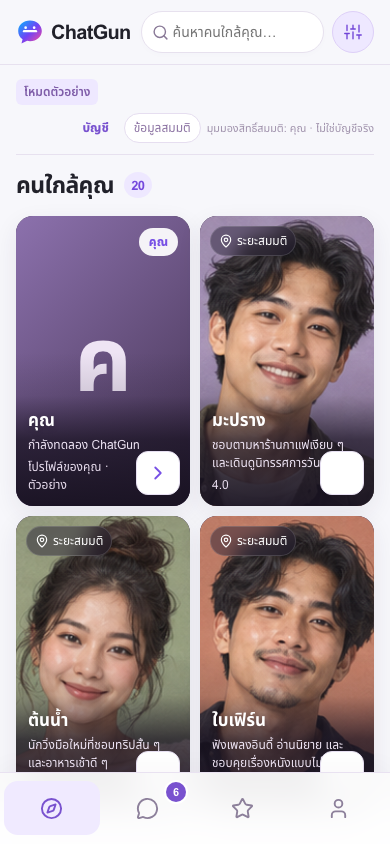
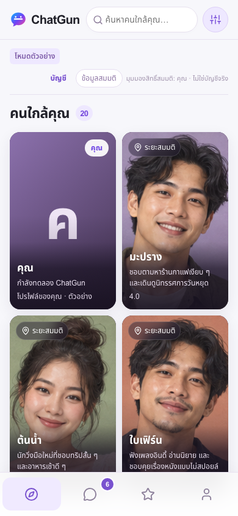
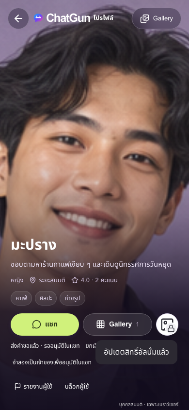
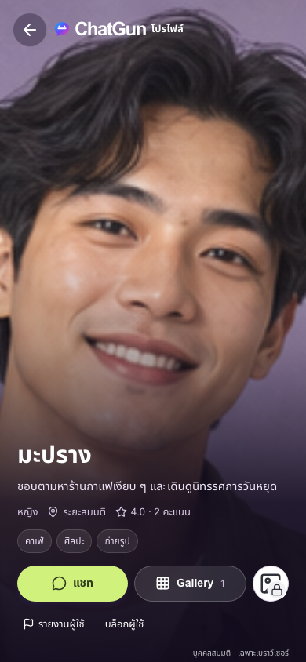
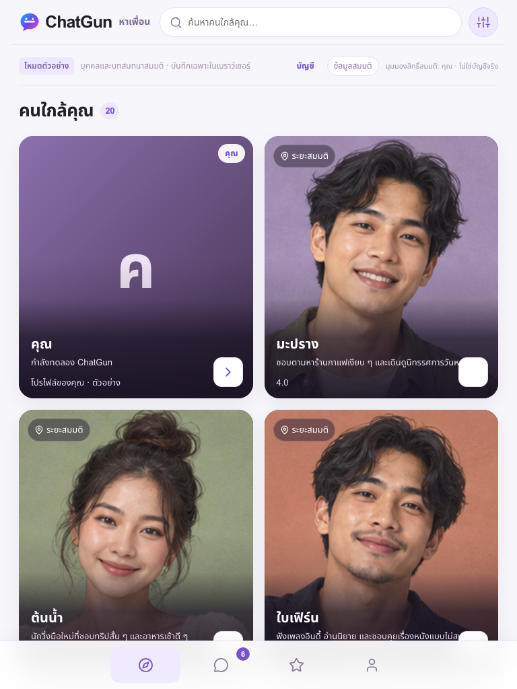
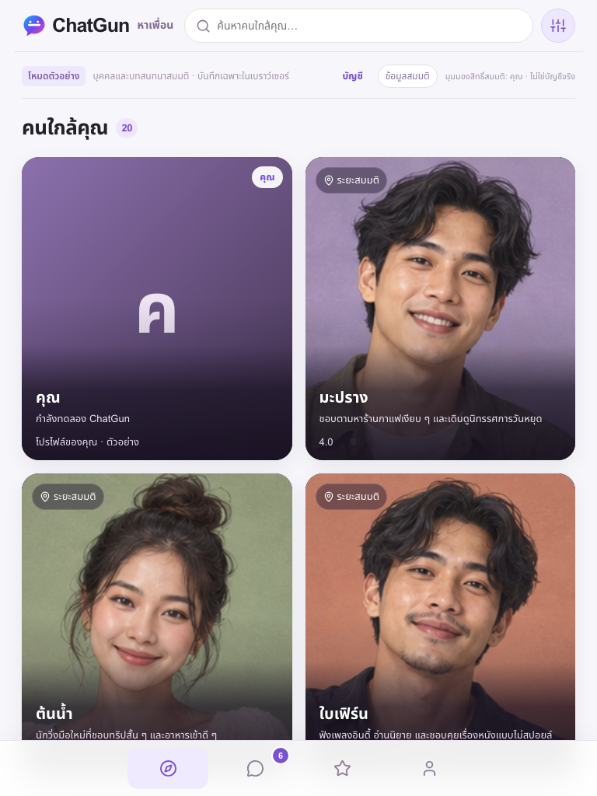
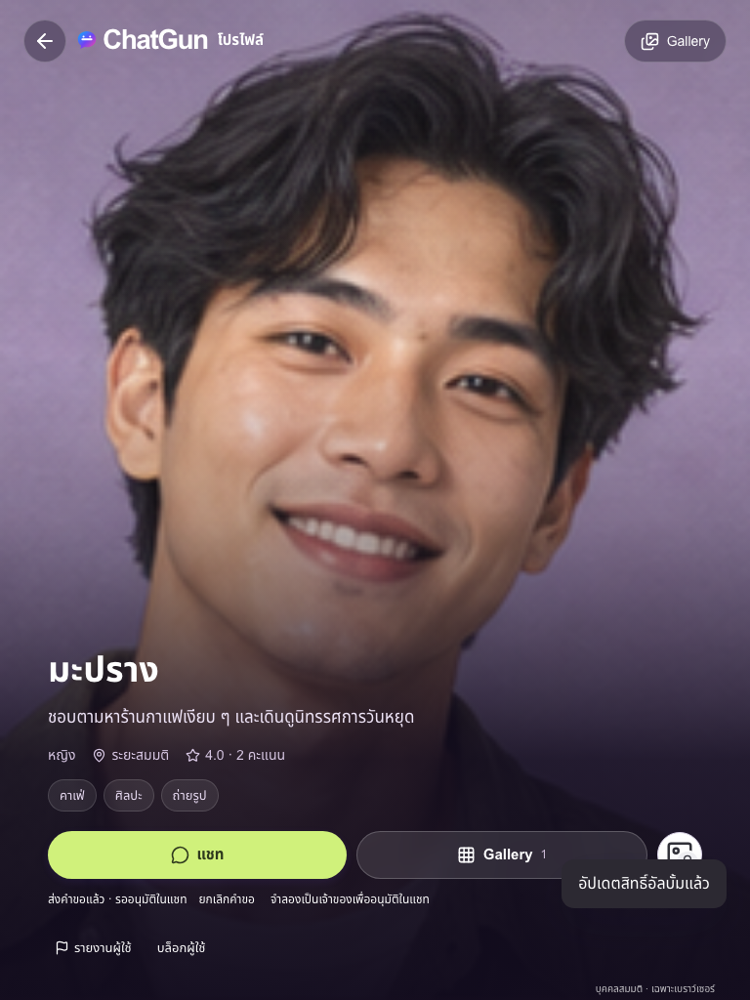
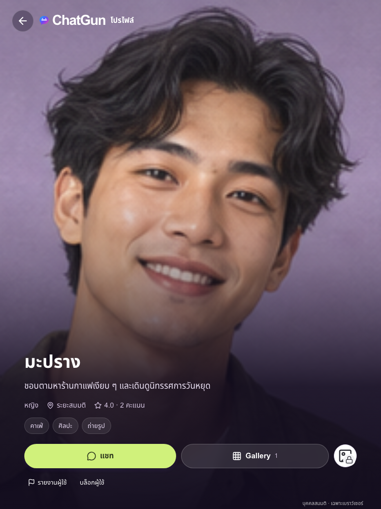
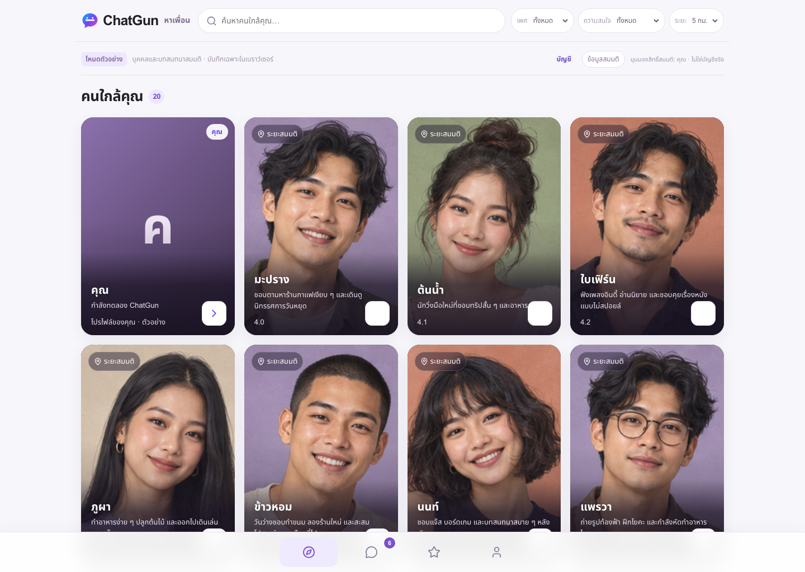
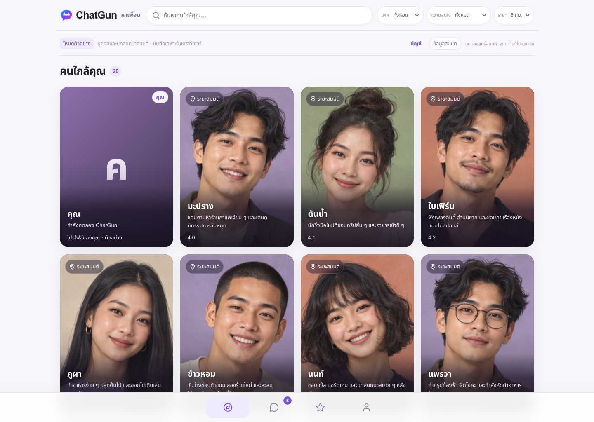
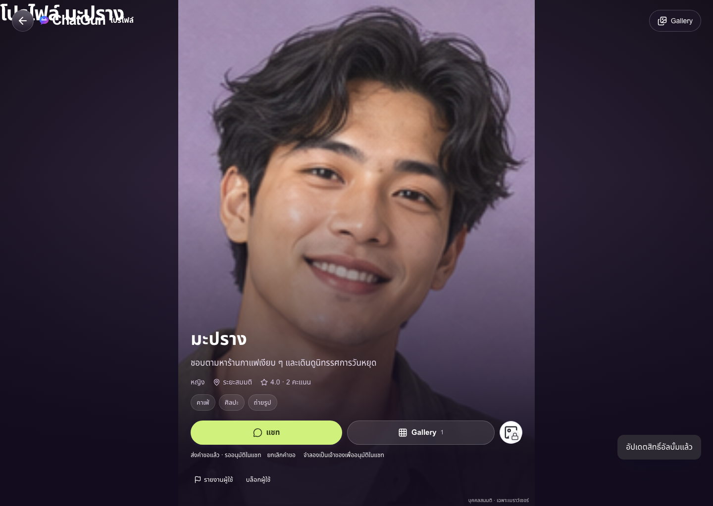
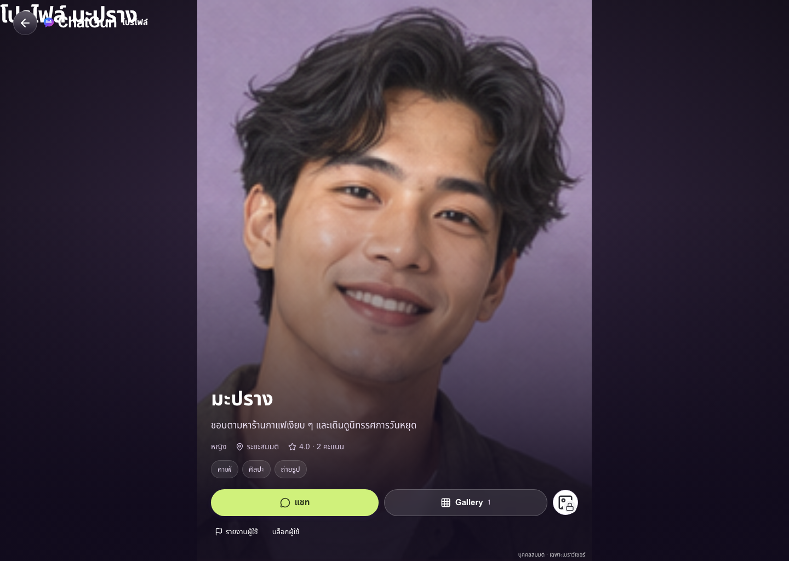
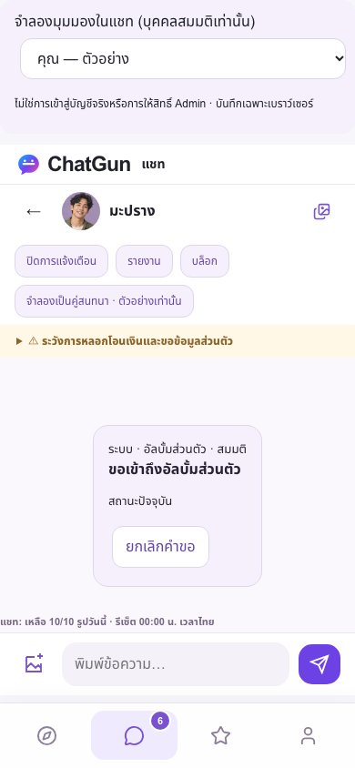
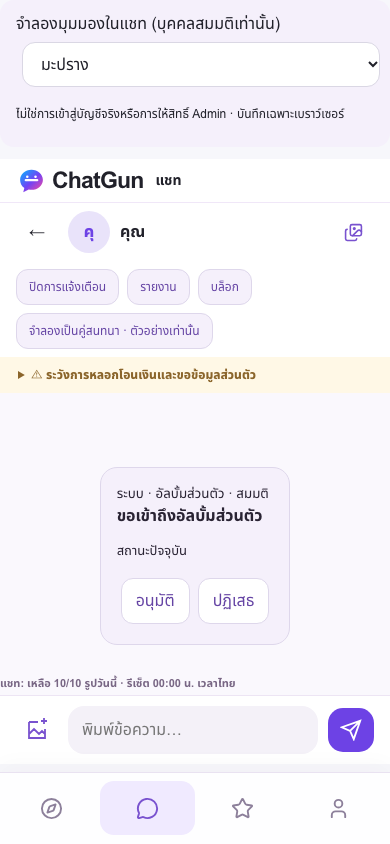
Guarded fictional Production demo only. All real services, public registration, Sensitive and OTP remain disabled. Production R2 stays unbound; no Production migration or user-data write. Original staging fingerprint, D1/R2 bindings, all 20 fictional profiles and 120 original messages are preserved. Only the separate Issue13 synthetic test environment receives test API writes; disposable sessions are revoked without deleting users.
GO: the owner-approved cleanup on the guarded fictional Production demo. Actual deployment metadata, hashes, fail-closed API checks and desktop/mobile browser regressions passed. Protected staging counts/fingerprint and bindings are unchanged; foreign-key violations are zero and all disposable isolated sessions have been revoked. Existing real-service NO-GO blockers remain: separately approved Production database/R2/provider readiness; legal/privacy review; moderation escalation, appeals, scanning and backup coverage. Owner coverage remains 19:00–22:00 Asia/Bangkok, without a backup or 24/7 claim. No PiggyPrice or original NEAR modification and no PR merge.
Rollback to prior guarded Pages deployment 76424279-5a53-41cb-b9c1-9028b602da2c, runtime b6ba87434a82e655bff0cea39ce637fca5488b4a, keeping all real-service gates closed. No database rollback is necessary.
Final results · Complete Preview log · Production log · Deployed SHA / hashes · Protected staging / D1 integrity